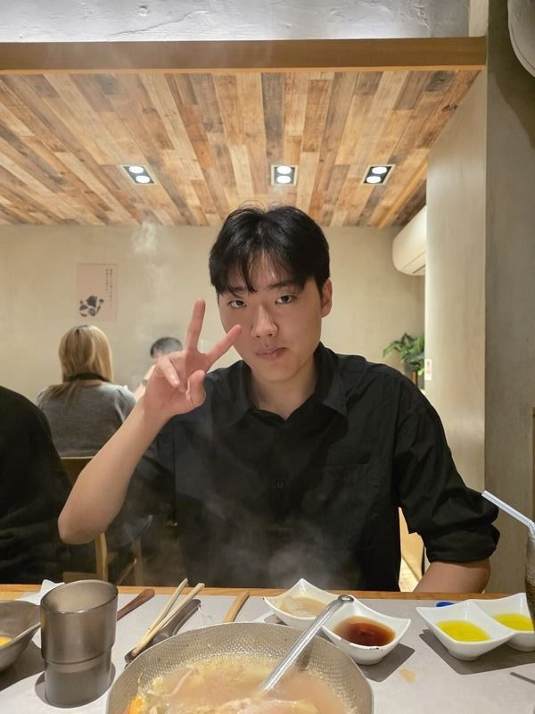
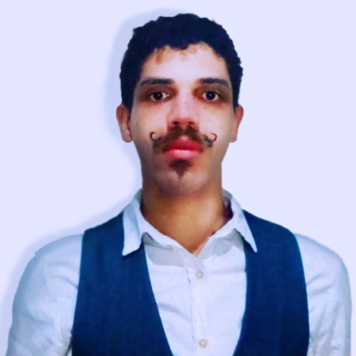
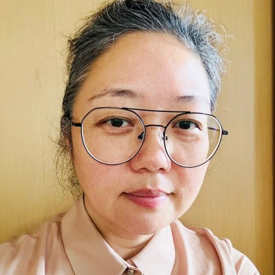

Co-Researcher
Fellow researchers I collaborate with on ongoing research projects and joint work.
Co-Researchers

Dohyun Hwang
Co-Researcher
Education
Yonsei University
Bachelor's degree, Computer Software Engineering
2022 – Ongoing
Raffaele Sassone
Co-Researcher
Education
Università di Bologna
Bachelor's degree, Computer Engineering
2022 – 2026
Scuola Militare Teulié
High School Diploma, Liceo

Pablo Lipa
Co-Researcher
Education
Universidade de São Paulo (USP)
MBA, Inteligência Artificial & Big Data
2025 – 2026
Federal University of Rio Grande do Sul
Master's degree (Mestrado), Inteligência Artificial
2023 – 2025
Universidade Estadual do Centro-Oeste
Ensino Secundário Profissional, Língua Polonesa e Literaturas de Língua Polonesa
2022 – 2025
UNESPAR — Universidade Estadual do Paraná
Bacharelado, Ciência da Computação
2022
IFMS — Instituto Federal de Mato Grosso do Sul
BTech, Programação de Jogos Digitais
2018 – 2022

Eunna Lee
Co-Researcher
Education
Ewha Womans University
Master of Fine Arts (MFA), Fine and Studio Arts
2012 – 2014
Ewha Womans University
Bachelor of Fine Arts (BFA), Fine and Studio Arts
2005 – 2009